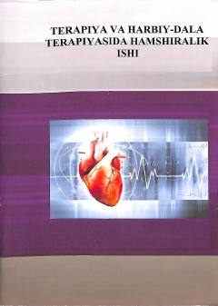

TVTerapiya va harbiy-dala sharoitida hamshiralik parvarishi bo'yicha o'quv qo'llanma.
Ushbu darslik tibbiyot oliygohlari talabalari uchun mo'ljallangan bo'lib, terapiya va harbiy-dala terapiyasi sohasida hamshiralik parvarishi, kasalliklarni tashxislash va davolash jarayonlarini qamrab oladi. Kitobda hamshiralik jarayoni, deontologiya, bemorlar bilan muloqot va turli kasalliklar sindromlarida hamshiralik yondashuvi batafsil yoritilgan.